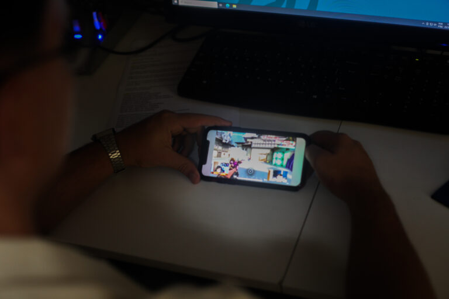

Uso excessivo de telas está associado à saúde mental de diferentes gerações
Sintomas de estresse, depressão e ansiedade foram observados em resultado de pesquisa da UFMG.
O uso excessivo de telas está ligado a uma piora da saúde mental de seus usuários, independentemente da idade, segundo mostra tese defendida no Programa de Pós-Graduação em Medicina Molecular da Faculdade de Medicina da UFMG. Os resultados mostraram, de forma inesperada, a presença da nomofobia (medo de ficar longe do celular) em idosos. Além disso, dos estudos que avaliaram as crianças, 72% deles encontraram aumento da depressão associado ao uso excessivo de telas.
A possível explicação da relação é o aumento do tempo em frente às telas no dia a dia após a pandemia do Covid-19, principalmente pelo tipo de utilização. Elas estão, cada vez mais, sendo utilizadas para trabalho, entretenimento e estudo. “Percebeu-se que os pacientes jovens com transtorno de déficit de atenção e hiperatividade e depressão tinham as telas a todo momento e, no período de pandemia, as telas foram as principais aliadas contra a solidão. Porém, as consequências desse uso excessivo podem ser vistas agora”, afirma a pesquisadora e autora do estudo Renata Maria Silva Santos.
Outra motivação para esses resultados é a utilização dos dispositivos como distração para as crianças enquanto os pais buscam realizar suas tarefas, contribuindo, então, para o aumento nas horas de uso. Nesse sentido, o distanciamento entre pais e filhos pode provocar um aumento da disposição para a depressão nas crianças.
O estudo foi feito por revisão sistemática, isto é, análise de estudos primários sobre o assunto, totalizando 142 artigos e mais de dois milhões de pessoas de diferentes países acompanhadas, trazendo uma amostra abrangente para o estudo. “A maior parte dessas pessoas são adolescentes, tendo em vista que são os nativos digitais. Porém o que chama atenção é a quantidade de idosos que desenvolveram a fobia de ficar separado do celular. Esse estudo é um alerta sobre o uso excessivo das telas, relação das pessoas com ela e o conteúdo consumido”, aponta a pesquisadora.
A pesquisa aponta que a participação em redes sociais foi responsável por aumentar o risco de depressão em meninas, uma vez que o conteúdo fornecido nas redes é de corpos perfeitos, gerando comparação e afetando a saúde mental. Da mesma forma em idosos que consomem conteúdos violentos na televisão. “A conclusão que a maioria dos estudos teve, é de que não basta limitar o tempo de tela, mas também enriquecer o tempo fora dela, tentando manter a mente ativa. A falta de gerenciamento do tempo aumenta o estresse de forma considerável, visto que nos Estados Unidos, por exemplo, mais de 30% dos adultos utilizam de jogos em seus aparelhos, atrapalhando as tarefas do dia a dia”, defende a pesquisadora.
A partir desses resultados, os pesquisadores sugerem algumas soluções, como determinar o tempo de tela de acordo com a idade e buscar os dispositivos com maiores possibilidades de socialização, como no caso do cinema. Além disso, o incentivo às atividades físicas ao ar livre são essenciais para combater o uso excessivo de aparelhos. Para a pesquisadora, “O estudo aponta que a dependência pode diminuir em 10% caso o smartphone esteja a um metro do usuário, contribuindo para a carga cognitiva, fator responsável pelo raciocínio”.